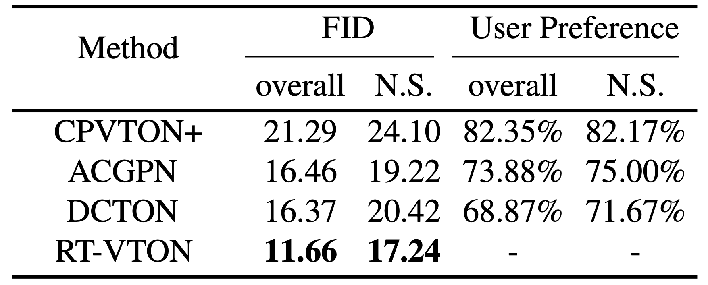
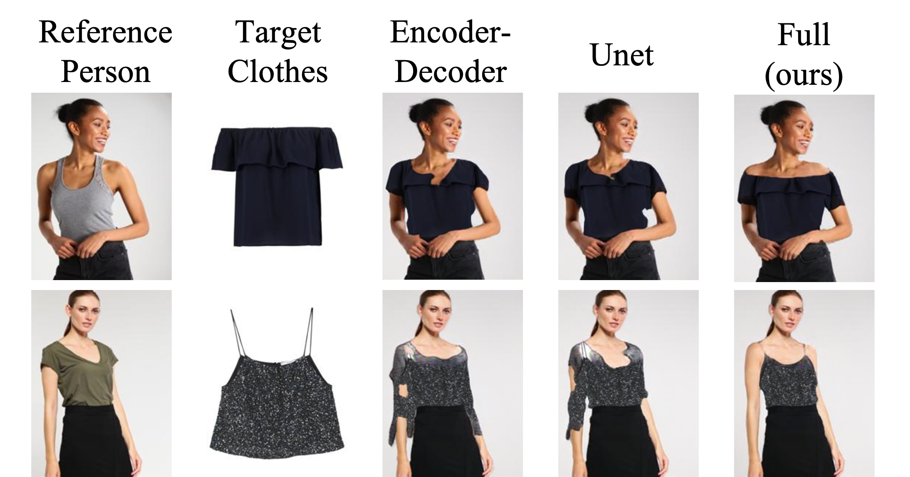
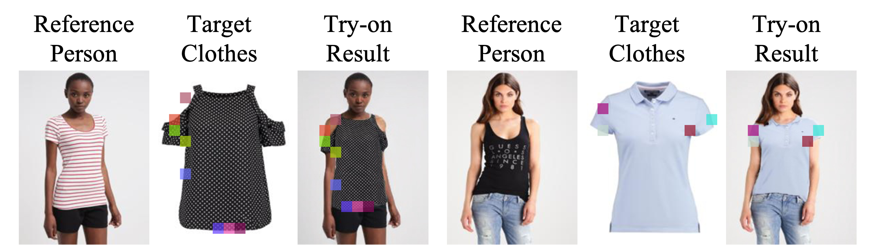
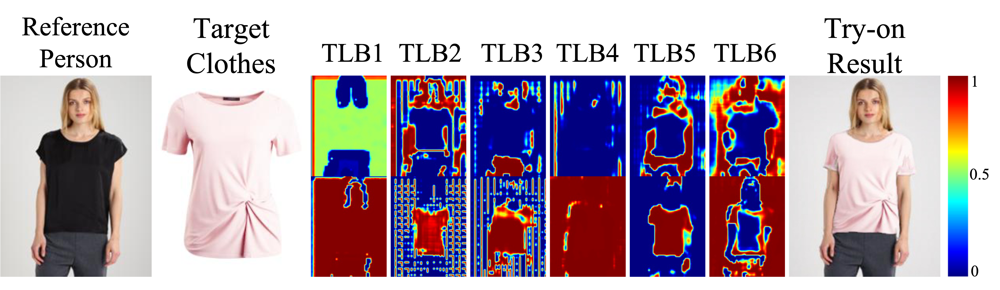

Abstract
Virtual try-on aims to transfer a target clothing image onto a reference person. Though great progress has been achieved, the functioning zone of existing works is still limited to standard clothes (e.g., plain shirt without complex laces or ripped effect), while the vast complexity and variety of non-standard clothes (e.g., off-shoulder shirt, wordshoulder dress) are largely ignored.
In this work, we propose a principled framework, Recurrent Tri-Level Transform (RT-VTON) , that performs full-range virtual try-on on both standard and non-standard clothes. We have two key insights towards the framework design: 1) Semantics transfer requires a gradual feature transform on three different levels of clothing representations, namely clothes code, pose code and parsing code. 2) Geometry transfer requires a regularized image deformation between rigidity and flexibility. Firstly, we predict the semantics of the “after-try-on” person by recurrently refining the tri-level feature codes using local gated attention and non-local correspondence learning. Next, we design a semi-rigid deformation to align the clothing image and the predicted semantics, which preserves local warping similarity. Finally, a canonical try-on synthesizer fuses all the processed information to generate the clothed person image. Extensive experiments on conventional benchmarks along with user studies demonstrate that our framework achieves state-of-the-art performance both quantitatively and qualitatively. Notably, RT-VTON shows compelling results on a wide range of non-standard clothe
Links
Experiments
Qualitative results
The following figures demonstrate RT-VITON performes better than DCTON, ACGPN and CPVITON+. The test pair and test results are shownn thes and here, from left to right are reference person, target clothes, try-on results of four algorithms including CP-VITON+, ACGPN, DCTON and RT-VITON.

Figure 1. Visual comparison of four virtual try-on methods in a standard to non-standard manner (top to bottom). With our Tri-Level Transform and semi-rigid deformation, RT-VTON produces photo-realistic results for the full-range of clothing types and preserves the fine details of the clothing texture.
Figure 2. The visual comparison of the image deformation methods between the TPS warping and our semi-rigid deformation.
Quantitative Results
Quantitative evaluation of try-on task is hard to conduct as there is no ground-truth of the reference person in the target clothes.
Table 1. Quantitative Comparisons. “N.S.” denotes non-standard. We show the Frechet Inception Distance (FID) and user study results of four methods.
Ablation Study
Our ablation studies are conducted mainly on analyzing the effectiveness of our Tri-Level Block in Semantic Generation Module (SGM). Three settings are given as: 1) full RT-VTON with Tri-Level Transform, 2) RTVTON with plain encoder-decoder connected by residual blocks, following, 3) RT-VTON with Unet as SGM, which is a common backbone in designing the tryon pipelines.
Figure 3. Visual ablation study of Semantic Generation Module (SGM) in RT-VTON.
Effectiveness of Non-Local Correspondence
In Fig. 4, non-local correspondence learning we used helps capture the non-standard clothing pattern (on the left), which demonstrates strong relationship of the off-shoulder area to retain the clothing shape. Moreover, the boundaries of the sleeves (on the right) are well depicted with the target clothes which leverages the long-range correlation to reconstruct the final semantic layout.
Figure 4. Visualization of our non-local correspondence given some manually selected positions.
Effectiveness of Gated Attention
we extract the attention masks for the six Tri-Level Blocks used in RTVTON
Figure 5. Visualization of the attention masks in our local gating mechanism for clothes code (top) and pose code (bottom). TLB1-6 denotes the six Tri-Level Blocks we use in our Semantic Generation Module (SGM).
Citation
@inproceedings{yang2022full,
title = {Full-Range Virtual Try-On With Recurrent Tri-Level Transform},
author = {Yang, Han and Yu, Xinrui and Liu, Ziwei},
booktitle = {Proceedings of the IEEE/CVF Conference on Computer Vision and Pattern Recognition},
pages = {3460--3469}
year = {2022}
}
Acknowledgments
This work is supported by NTU NAP, MOE AcRF Tier 1 (2021-T1-001-088), and under the RIE2020 Industry Alignment Fund – Industry Collaboration Projects (IAF-ICP) Funding Initiative, as well as cash and in-kind contribution from the industry partner(s).